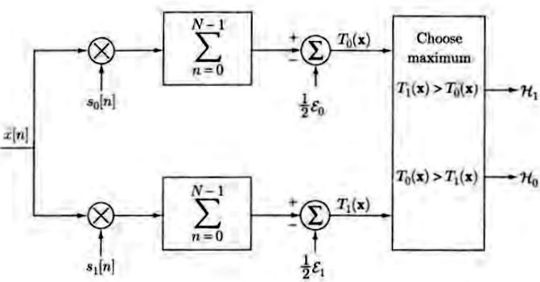
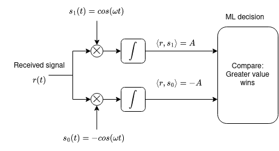
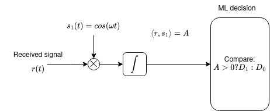
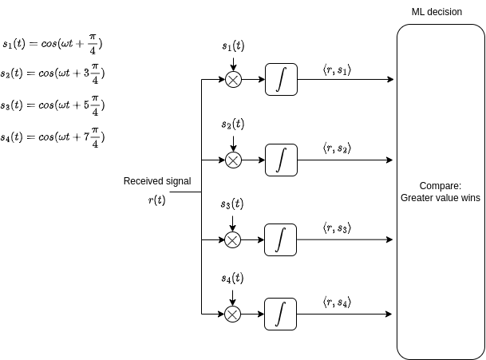
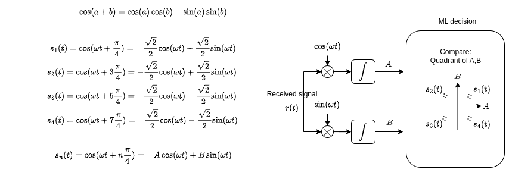
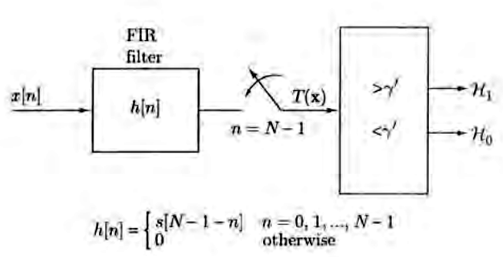

5 Decizie cu mai multe eșantioane
\[ \newcommand{\grtlessH}{\underset{{H_0}}{\overset{H_{1}}{\gtrless}}} \renewcommand{\vec}[1]{\mathbf{#1}} \]
Problemele de decizie bazate pe un singur eșantion sunt mai degrabă de uz academic: ușor de înteles, dar rar întâlnite în practică, pentru că nu sunt foarte robuste. În practică, deciziile de acest tip se iau folosinf mai multe eșantioane, sau chiar semnale continue, ceea ce crește mult fiabilitatea.
În continuare vom analiza problemele de decizie pe baza a mai multor eșantioane.
6 Decizie cu mai multe eșantioane
6.1 Definiția problemei
Se transmite un semnal necunoscut \(s(t)\). Există două ipoteze:
- \(H_0\): semnalul original este \(s(t) = s_0(t)\)
- \(H_1\): semnalul original este \(s(t) = s_1(t)\)
Receptorul poate lua două decizii:
- \(D_0\): se decide că semnalul a fost \(s(t) = s_0(t)\)
- \(D_1\): se decide că semnalul a fost \(s(t) = s_1(t)\)
În total, vor fi 4 scenarii posibile.
Semnalul e afectat de zgomot (necunoscut), așadar se recepționează un semnal afectat de zgomot:
\(r(t) = s(t) + n(t)\)
Din \(r(t)\) se iau N eșantioane, nu doar 1. Fiecare eșantion \(r_i = r(t_i)\) se ia la momentul \(t_i\). Eșantioanele formează vectorul de eșantioanelor
\[\vec{r} = [r_1, r_2, ... r_N]\]
Fiecare eșantion \(r_i\) este o variabilă aleatoare, obținută ca suma dintre o constantă \(s(t_i)\) și un eșantion de zgomot \(n(t_i)\):
\(r(t_i) = s(t_i) + n(t_i)\) = constantă + o v.a.
Întreg vectorul \(\vec{r}\) reprezintă un set de \(N\) v.a. dintr-un proces aleator, iar valorile vectoruluisunt descrise de distribuții de ordin \(N\):
În ipoteza \(H_0\): \[w_N(\vec{r} | H_0) = w_N(r_1, r_2, ...r_N | H_0)\]
În ipoteza \(H_1\): \[w_N(\vec{r} | H_1) = w_N(r_1, r_2, ...r_N | H_1)\]
6.2 Criterii de decizie
Se vor aplica exact aceleași criterii de decizie, bazate pe raportul de plauzibilitate similar ca în cazul unui singur eșantion, cu diferența că acum \(\vec{r}\) este un vector:
\[\frac{w_N(\vec{r} | H_1)}{w_N(\vec{r} | H_0)} \grtlessH K\]
Observații:
- \(\vec{r}\) este un vector; prin el se consideră plauzibilitatea tuturor eșantioanelor
- \(w_N(\vec{r} | H_0)\) = plauzibilitatea vectorului \(\vec{r}\) în ipoteza \(H_0\)
- \(w_N(\vec{r} | H_1)\) = plauzibilitatea vectorului \(\vec{r}\) în ipoteza \(H_1\)
- valoarea lui \(K\) este dată de criteriul de decizie utilizat
Dacă zgomotul este alb (cel mai întâlnit în practică), atunci eșantioanele \(r_i\) sunt independente, și distribuția vectorului \(\vec{r}\) poate fi descompusă ca un produs
\[w_N(\vec{r} | H_j) = w(r_1|H_j) \cdot w(r_2|H_j) \cdot ... \cdot w(r_N|H_j)\]
De exemplu, plauzibilitatea obținerii vectorului \([5.1, 4.7, 4.9]\) = plauzibilitatea obținerii lui \(5.1\) \(\times\) plauzibilitatea obținerii lui \(4.7\) \(\times\) plauzibilitatea obținerii lui \(4.9\)
Prin urmare, criteriile bazate pe raportul de plauzibilitate devin \[\frac{w_N(\vec{r} | H_1)}{w_N(\vec{r} | H_0)} = \frac{w(r_1|H_1)}{w(r_1|H_0)} \cdot \frac{w(r_2|H_1)}{w(r_2|H_0)} ... \frac{w(r_N|H_1)}{w(r_N|H_0)} \grtlessH K\]
Așadar, raportul de plauzibilitate al unui vector de eșantioane se obține înmulțind rapoartele de plauzibilitate ale fiecărui eșantion în parte, și se aplică criteriile de decizie obișnuit asupra asupra rezultatului final.
Toate criteriile de decizie pot fi scrise astfel: \[\frac{w_N(\vec{r} | H_1)}{w_N(\vec{r} | H_0)} = \frac{w(r_1|H_1)}{w(r_1|H_0)} \cdot \frac{w(r_2|H_1)}{w(r_2|H_0)} ... \frac{w(r_N|H_1)}{w(r_N|H_0)} \grtlessH K\]
Valoarea lui \(K\) se alege în funcție de criteriul anume care se dorește a fi folosit, la fel ca în cazul unui singur eșantion:
- criteriul ML: \(K=1\)
- criteriul MPE: \(K=\frac{P(H_0)}{P(H_1)}\)
- criteriul MR: \(K=\frac{(C_{10}-C_{00})p(H_0)}{(C_{01}-C_{11})p(H_1)}\)
6.3 Caz particular: zgomot AWGN
În cazul zgomotul gaussian tip AWGN (“Additive White Gaussian Noise”, zgomot alb, gaussian, aditiv), expresiile se simplifică semnificativ.
Pentru ipoteza \(H_1\), avem: \[w(r_i|H_1) = \frac{1}{\sigma \sqrt{2 \pi}} e^{-\frac{(r_i - s_1(t_i))^2}{2 \sigma^2}}\]
Pentru ipoteza \(H_0\): \[w(r_i|H_0) = \frac{1}{\sigma \sqrt{2 \pi}} e^{-\frac{(r_i - s_1(t_i))^2}{2 \sigma^2}}\]
Raportul de plauzibilitate al vectorului \(\vec{r}\) va fi: \[\frac{w_N(\vec{r} | H_1)}{w_N(\vec{r} | H_0)} = \frac{e^{-\frac{\sum (r_i - s_1(t_i))^2}{2 \sigma^2}}}{e^{-\frac{\sum (r_i - s_0(t_i))^2}{2 \sigma^2}}} = e^{\frac{\sum (r_i - s_0(t_i))^2 - \sum (r_i - s_1(t_i))^2}{2 \sigma^2}}\] și se compară, așa cum am văzut, cu \(K\): \[\frac{w_N(\vec{r} | H_1)}{w_N(\vec{r} | H_0)} = e^{\frac{\sum (r_i - s_0(t_i))^2 - \sum (r_i - s_1(t_i))^2}{2 \sigma^2}} \grtlessH K\]
Aplicând logaritmul natural, obținem: \[\sum (r_i - s_0(t_i))^2 \grtlessH \sum (r_i - s_1(t_i))^2 + 2 \sigma^2 \ln(K)\]
6.3.1 Interpretarea 1: distanța geometrică
Cele două sume reprezintă distanța geometrică la pătrat dintre vectorul observat \(\vec{r}\) și semnalele originale \(s_1(t)\), respectiv \(s_0(t)\)
\[\sum (r_i - s_1(t_i))^2 = \|\vec{r} - \vec{s_1(t)}\|^2 = d(\vec{r}, s_1(t))^2\] \[\sum (r_i - s_0(t_i))^2 = \|\vec{r} - \vec{s_0(t)}\|^2 = d(\vec{r}, s_0(t))^2\]
Întrucât avem de-a face cu vectori de N eșantioane, aplicăm relația de distanță Euclideanp între vectori de dimensiune \(N\).
Pentru zgomot gaussian, toate criteriile de decizie se reduc așadar la a compara distanțele (la pătrat):
Criteriul Maximum Likelihood:
- \(K = 1\), \(\ln(K) = 0\)
- se alege distanța minimă între \(\vec{r}\) și vectorii \(s_1(t)\), respectiv \(s_0(t)\))
- de unde și numele “receptor de distanță minimă”
Criteriul Minimum Probability of Error:
- \(K = \frac{P(H_0)}{P(H_1)}\)
- Apare un termen suplimentar, în favoarea ipotezei mai probabile
Criteriul Minimum Risk:
- \(K=\frac{(C_{10}-C_{00})p(H_0)}{(C_{01}-C_{11})p(H_1)}\)
- Termenul suplimentar depinde și de probabilități, și de costuri
6.3.2 Interpretarea 2: produs scalar
Dacă se descompun în continuare parantezele în relația: \[\sum (r_i - s_0(t_i))^2 \grtlessH \sum (r_i - s_1(t_i))^2 + 2 \sigma^2 \ln(K),\]
obținem:
\[\begin{split} \sum (r_i )^2 + \sum s_0(t_i)^2& - 2 \sum r_i s_0(t_i) \grtlessH \sum (r_i )^2 + \\ & + \sum s_1(t_i)^2 - 2 \sum r_i s_1(t_i) + 2 \sigma^2 \ln(K) \end{split}\]
care este echivalent cu: \[\sum r_i s_1(t_i) - \frac{ \sum (s_1(t_i))^2}{2} \grtlessH \sum r_i s_0(t_i) - \frac{\sum (s_0(t_i))^2 }{2} + \sigma^2 \ln(K)\]
Produsul scalar al vectorilor \(\vec{a}\) și \(\vec{b}\) se definește astfel: \[\langle a,b \rangle = \sum_i a_i b_i\]
În relația noastră, avem:
\(\sum r_i s_1(t_i) = \langle \vec{r}, \vec{s_1(t)} \rangle\) este produsul scalar al vectorului \(\vec{r} = [r_1, r_2, ... r_N]\) cu \(\vec{s_1(t_i)} = [s_1(t_1), s_1(t_2), ... s_1(t_N)]\)
\(\sum r_i s_0(t_i) = \langle \vec{r}, \vec{s_0(t)} \rangle\) este produsul scalar al vectorului \(\vec{r} = [r_1, r_2, ... r_N]\) cu \(\vec{s_0(t_i)} = [s_0(t_1), s_0(t_2), ... s_0(t_N)]\)
\(\sum (s_1(t_i))^2 = \sum s_1(t_i) \cdot s_1(t_i) = \langle \vec{s_1(t)}, \vec{s_1(t)} \rangle = E_1\) este energia vectorului \(s_1(t)\)
\(\sum (s_0(t_i))^2 = \sum s_0(t_i) \cdot s_0(t_i) = \langle \vec{s_0(t)}, \vec{s_0(t)} \rangle = E_0\) este energia vectorului \(s_0(t)\)
Decizia se poate rescris sub forma: \[\langle \vec{r}, \vec{s_1} \rangle - \frac{E_1}{2} \grtlessH \langle \vec{r},\vec{s_0} \rangle - \frac{E_0}{2} + \sigma^2 \ln(K)\]
Interpretarea pe care o dăm este următoarea. Pentru zgomot gaussian, decizia se ia comparând produsele scalare dintre semnalul recepționat și semnalele originale. În relație se scad energiile semnalelor, pentru o comparație corectă, și mai există de asemenea termenul suplimentar care depinde de criteriul de decizie ales.
În matematică, produsul scalar măsoară similitudinea a două semnale, așadar putem spune că, pentru a lua o decizie, verificăm dacă vectorul eșantioanelor \(\vec{r}\) este mai asemănător cu \(s_1(t)\) sau cu \(s_0(t)\)

[sursa: Fundamentals of Statistical Signal Processing, Steven Kay]
6.3.2.1 Exemplu: BPSK
Demodulare BPSK:




6.3.3 Filtru adaptat
Produsul scalar a doi vectori se poate calcula relativ mai simplu folosind un filtru liniar, numit filtru adaptat.
Dat fiind un semnal \(s[n]\) care se dorește a fi detectat, un filtru adaptat este un filtru proiectat să aibă răspunsul la impuls egal cu oglindirea semnalului care se dorește a fi detectat (eng. “matched filter”)
\[h[n] = s[N-1-n]\] Spunem că filtrul este adaptat semnalului dorit.
Exemplu:
- dacă \(s[n] = [\underuparrow{1}, 2, 3, 4, 5, 6]\)
- atunci \(h[n] = s[N-1-n] = [\underuparrow{6}, 5, 4, 3, 2, 1]\)
Daca la intrarea unui filtru adaptat semnalului \(s[n]\) se pune un semnal \(r[n]\), atunci eșantionul de la ieșirea filtrului la momentul \(N-1\) este egal cu produsul scalar al vectorilor \(r[n]\) și \(s[n]\).
Demonstrație:
Semnalul de ieșire, \(y[n]\), este convoluția dintre intrarea \(r[n]\) și răspunsul la impuls \(h[n]\), adică: \[y[n] = \sum_k r[k] h[n-k] = \sum_k r[k] s[N-1-n+k]\]
La momentul \(n=N-1\), adică imediat după ultimul eșantion al semnalului de intrare, ieșirea este: \[y[N-1] = \sum_k r[k] s[k],\] adică chiar produsul scalar:
Pentru decizia între două semnale, se folosește un filtru adaptat la semnalul \(s_1(t_i)\) și un alt filtru adaptat la semnalul \(s_0(t_i)\), se eșantionează ieșirile la momentul final \(n = N-1\) obținându-se valorile produselor scalare, care apoi se compară conform relației de decizie.
Dacă unul din semnale este 0, de exemplu \(s_0(t) = 0\), avem nevoie doar de un singur filtru adaptat pentru \(s_1(t)\), și se compară rezultatul cu un prag

[sursa: Fundamentals of Statistical Signal Processing, Steven Kay]
7 Decizie folosind observare continuă
Prin “observare continuă” înțelegem faptul se folosește întreg semnalul continuu, fără eșantionare. Acest lucru poate fi tratat ca un caz limită al deciziei cu \(N\) eșantioane, dar cu \(N \to \infty\)
Problema se pune în același mod.
Semnalele originale sunt \(s_0(t)\) si \(s_1(t)\), afectate de zgomot \(n(t)\). Presupunem doar zgomot Gaussian, pentru simplitate. Semnalul recepționat este \(r(t)\).
În aceste condiții, recurgem tot la interpretarea deciziei folosind spații euclideene:
Fiecare semnal \(r(t)\), \(s_1(t)\) și \(s_0(t)\) reprezintă un punct într-un spațiu Euclidian infinit dimensional
Distanța între două semnale este tot distanța Euclideeană, similar cu caz N dimensional, dar cu integrală în loc de sumă: \[d(\vec{r},\vec{s}) = \sqrt{\int \left( r(t) - s(t) \right)^2 dt}\]
Produsul scalar între două semnale: \[\langle \vec{r},\vec{s} \rangle = \int r(t) s(t) dt\]
Toate criteriile de decizie sunt aceleași:
- Criteriul Maximum Likelihood: \(K = 1\), \(\ln(K) = 0\) (se alege distanța minimă)
- Criteriul Minimum Probability of Error: \(K = \frac{P(H_0)}{P(H_1)}\)
- Criteriul Minimum Risk: \(K=\frac{(C_{10}-C_{00})p(H_0)}{(C_{01}-C_{11})p(H_1)}\)
În cazul zgomotului tip AWGN, folosim exact aceleași reguli de decizie, cea bazată pe distanțe, fie cea bazată pe produse scalare.
Decizia pe baza distanței Euclideene: \[d(\vec{r}, \vec{s_0})^2 \grtlessH d(\vec{r}, \vec{s_1})^2 + 2 \sigma^2 \ln(K)\] Singura diferență este că distanța se calculează cu formula precedentă, cu integrală, adecvată semnalelor continue.
Decizie pe baza produselor scalare: \[\langle \vec{r}, \vec{s_1} \rangle - \frac{E_1}{2} \grtlessH \langle \vec{r},\vec{s_0} \rangle - \frac{E_0}{2} + \sigma^2 \ln(K)\] Produsul scalar se calculează cu formula precedentă, cu integrală, adecvată semnalelor continue.
Se observă așadar că toate interpretările rămân identice, se schimbă doar tipul de semnal cu care lucrăm.
7.0.1 Filtru adaptat
Ca și în cazul eșantioanelor, produsul scalar a două semnale se poate calcula cu un filtru adaptat.
Un filtru adaptat este un filtru proiectat să aibă răspunsul la impuls egal cu oglindirea semnalului căutat. Dacă semnalul original \(s(t)\) are lungimea T, răspunsul la impuls al filtrului adaptat este \[h(t) = s(T - t)\] Filtrul adaptat este analogic, răspunsul la impuls este un semnal continuu.
Ieșirea unui filtru adaptat la momentul \(t = T\) este egală cu produsul scalar al intrării \(r(t)\) cu \(s(t)\), ceea ce permite calculul ușor al produsului scalar.
În cazul deciziei între doup semnale folosind filtre adaptate, se folosesc:
un filtru adaptat la semnalul \(s_1(t)\)
un alt filtru adaptat la semnalul \(s_0(t)\)
Se eșantionează ieșirile filtrelor la sfârșitul semnalelor, \(t = T\), și se obțin valorile produselor scalare. Apoi se aplică regula de decizie cu produse scalare.
8 Review: spații vectoriale Euclidiene
Un spațiu vectorial este o mulțime cu următoarele două proprietăți:
- suma a două elemente = rămâne în același spațiu
- multiplicarea cu o constantă = rămâne în același spațiu
Se presupune că există operațiile aritmetice de bază (suma, multiplicare cu o constantă).
Exemple:
- 1D = o dreaptă
- 2D = un plan
- 3D = spațiu tridimensional
- N-D = …
- \(\infty\)-D = ..
Operația fundamentală într-un spațiu vectorial este produsul scalar, definit ca:
- pentru semnale discrete: \[\langle \vec{x},\vec{y} \rangle = \sum_i x_i y_i\]
- pentru semnale continue: \[\langle \vec{x},\vec{y} \rangle = \int x(t) y(t)\]
Norma (lungimea) unui vector = radical din produsul scalar cu sine însuși:
\[\|\vec{x}\| = \sqrt{ \langle \vec{x},\vec{x} \rangle }\]
Distanța între doi vectori = norma diferenței dintre ei:
\[d(\vec{x}, \vec{y}) = \|\vec{x} - \vec{y}\|\]
Energia unui semnal = norma la pătrat:
\[E_x = \|\vec{x}\|^2 = \langle \vec{x},\vec{x} \rangle\]
Unghiul dintre doi vectori:
\[cos(\alpha) = \frac{\langle x,y \rangle}{||x|| \cdot ||y||}\]
Termenul \(cos(\alpha)\) are are valoare între -1 și 1. În particular, dacă \(\langle x,y \rangle = 0\), vectorii se numesc ortogonali (perpendiculari).
Bonus: transformata Fourier = produs scalar al unui semnal \(x(t)\) cu semnale de forma \(e^{j \omega t}\):
\[\mathcal{F} \{ x(t)\} = \langle x(t), e^{j \omega t}\rangle = \int x(t) e^{-j \omega t}\]
Pentru semnale complexe, în formula produsului scalar cel de-al doilea termen se conjugă, de aceea este \(-j\) în loc de \(j\):
\[\langle \vec{x},\vec{y} \rangle = \sum_i x_i y_i^*\] \[\langle \vec{x},\vec{y} \rangle = \int x(t) y(t)^*\]
Trandformata Fourier pentru semnale discrete se definește similar, tot pe baza produsului scalar.
Concluzie: definirea algoritmilor în mod generic, pe bază de produse scalare / distanțe / norme, ne permite să aplicăm aceeași definiție sau algoritm tuturor spațiilor vectoriale, în mod automat, indiferent ca e vorba de semnale discrete sau continue, mai scurte sau mai lungi etc.